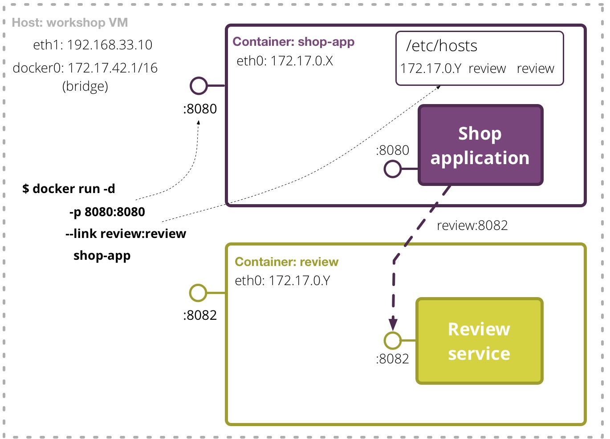

Hands-On Workshop
Continuously Delivering Microservices
Microservices References
-
Building Microservices (Book), Sam Newman

- Goldilocks and the three microservices (Video), Charles Haynes
- State of the Art in Microservices (Video, Slides), Adrian Cockcroft
- Microservices (Article), Martin Fowler and James Lewis
- Microservices - Not A Free Lunch! (Blog), Benjamin Wootton

Topics
| Getting Started | Check your workshop VM is configured properly |
| Module 1 | Introduction to the Monolith and Continuous Delivery |
| Module 2 | Meet our first microservice and Docker |
| Module 3 | Our second microservice and Consumer-Driven Contracts (CDCs) |
| Wrap up | Service discovery, operational concerns and future trends |
Setup Your Box
To Build, Test, Run and Deploy Microservices using Docker
Setup workshop VM
Install Prerequisites from USB drive
- Install
VirtualBox-5.0.14frominstallersdirectory - Install
vagrant-1.8.1frominstallersdirectory - If you are running Windows:
- Install
Git-2.7.1frominstallersdirectory. - Use default locations suggested by installers.
- Restart your machine when requested by installers.
- Copy content of usb-stick to your computer
Open up the slides
- Important* - If using Windows, unzip from Git Bash
- Open file
index.htmlfound inslidesdirectory on your computer
- You should see these instructions in your browser
and be able to copy and paste commands if needed
Run the Workshop VM
- Start up the workshop VM
fromworkshop-dist/boxdirectory on your machine
$ cd workshop-dist/box
workshop-dist/box$ vagrant box add workshop workshop.box
workshop-dist/box$ vagrant up
workshop-dist/box$ vagrant sshGit Bash$ cd 'workshop-dist\box\'
workshop-dist\box$ vagrant box add workshop workshop.box
workshop-dist\box$ vagrant up
workshop-dist\box$ vagrant sshHands-on
Sessions Overview
Introduction of your playground and the rules
The Playground Overview
Glossary
|
Command to run on your machine from workshop-dist/box directory to start up workshop VM |
|
Command to run on your machine from workshop-dist/box directory to log into workshop vm. This should be called after starting the vm. All consequent commands run on the workshop VM |
|
Prompt displayed when running commands on microservices VM |
/home/vagrant/topics/{state}/{topic_name} |
Topic builder scripts for start/finish state on workshop VM |
|
Command to configure a topic in the start or finish state on workshop VM |
/home/vagrant/workspace/... |
Source code repositories on the workshop VM |
{dir-on-your-machine}/my-workspace/... |
Source code repositories on your machine. This directory is synced with workshop VM |
Git repositories on your VM
- Some exercises will require modifying files in your local Git workspaces
- On your VM these will be under:
/home/vagrant/workspace/ - On your computer these will be under:
{dir-on-your-machine}/my-workspace/ - Always commit and push changes from your VM (not from your computer)
- Example of making changes in the VM terminal:
echo "Hello world" > my-new-file.txt git status # See new/modified files git add my-new-file.txt git commit -m "Some useful message about the change" git push # Submit change to the remote repository (hosted your VM) - When you push changes, Go-CD will detect the change a kick off a build (it periodically polls the git repositories for changes)
Getting Started
Check your workshop VM is configured properly
Run the getting started topic
- Log into workshop VM
- If you are using Windows run
Git Bash
workshop-dist/box$ vagrant sshgetting_started topic script
vagrant@workshop:~$ cd ~/topics/start/getting_startedvagrant@workshop:~$ ./up.shVerify CD Pipeline
is working
- Open a browser to the Go-CD(*) dashboard
on your machine:http://localhost:8153
View the build results
- Look for "
Hello, world" in the console output: - Click on the Commit stage (green bar) in the pipeline
- Click on the Build job in the left pane
- Select Console tab
- Examine the output for "Hello, world"
- Your VM is now working properly
- For more detailed instructions: README
View the build results

View the build results
Module 1
Intro to the Monolith and Continuous Delivery with Go-CD
Workshop Journey
Why are we here? What are we going to do?
Our journey today...
- Monolithic shop app
- Deploy shop app
- Extract Review Service
- Extract Catalogue Service
- Consumer Driven Contracts
Module 1 - Overview
This module uses the shop-app in it's monolithic form, i.e. no external services used. You will have to build, test, package and deploy the shop-app via a delivery pipeline.
Once deployed, you can access the application on your host machine at:
http://localhost:8090
You will learn about:
- Continuous Delivery (CD) pipelines
- Typical stages in a CD pipeline
- Go-CD as a tool for implementing a delivery pipeline
- Become familiar with the Musik shop app
- Build artifacts and tagging them with a build number
Continuous Delivery
- Continuous Delivery (CD) takes Agile and Continuous Integration further by enabling frequent, automated, repeatable, low-risk delivery into Production ("the last mile")
- The CD pipeline is a key construct used to automate the delivery process
- Software is always in a releaseable state - each commit is a release candidate until proven otherwise
- Demonstates real progress - no delayed integrations; visibility
- Exposes bottlenecks and other inefficiencies
- Provides rapid feedback at all stages of the delivery process
- Fits well into distributed team structures
Continuous Delivery: Pipeline
Image credit: Continous Delivery (book), Jez Humble and David FarleyContinuous Delivery: References
-
Continuous Delivery (Book), Jez Humble and David Farley
- DZone Refcardz: Continuous Delivery
- Implementing Continuous Delivery (ThoughtWorks) - Slide series
Looking at the CD build pipeline
Meet our monolith
- Our monolithic app is called Musik shop
- Source code is located here:
vagrant@workshop:~$ cd ~/workspace/shop-app - Viewing the app in browser:
http://localhost:8090
Musik Shop Data Model
Application Overview
Challenge
Tag app with build number
- View Module 1 README for detailed instructions
- We want traceability from our deployed apps/services to the build that produced the artifacts
- In your VM terminal, check running version of shop app:
docker ps # ==> You will see tag 'latest' - Configure
ShopApp - Packagestage to pass in build number to package script - Hint: View console tab from previous build to identity available Go-CD environment variables
- Trigger a build and deploy it
- Now verify correctly tagged running version of app is running:
docker ps # ==> You will see tag with builder number
(Optional) Challenge
Show upstream build number in Deploy pipeline build label
- Make it easier to see which build of the app has been deployed
- Click the 'gear' icon for the
ShopApp-Deploypipeline - In
Generial Options / Basic Settings, edit theLabel Templatefield - Hint: Try
${ShopApp}-${COUNT} - See page Use a custom pipeline label (external link)
- Redploy the app to see the label take effect
Looking at the CD build pipeline
View the Pipeline Value-Stream Map
Module 1 - Wrap-up
- Introduced the monolithic web app "Musik Shop"
- Built a basic CD pipeline to build, test, package and deploy the "Musik Shop" app
- Reviewed basic Continous Delivery concepts
- Previewed application deployment to Docker
Module 1 - Tips and Advice
- Use CD Pipelines to automate your build process and provide feedback on production readiness of software
- Model your build process as a series of stages for improved feedback
- Provide scripts for building, testing, packaging and deploying your apps:
- Store these with your app code
- Call them from your CI/CD tool
- Build artifacts once and use them in downstream stages / pipelines
- Always tag your build artifacts with a build number
- Extend your CD pipeline to automate deployment into your environments
- Monolithic apps can be easy to build and deploy as they have less moving parts
Module 2
Meet our first microservice and Docker
Our journey today...
- Monolithic shop app
- Deploy shop app
- Extract Review Service
- Extract Catalogue Service
- Consumer Driven Contracts
Module 2 - Overview
In this module, we extract the album review functionality from the monolithic shop-app into a separate service called the review service. You will be provided with the Go-CD build and deploy pipelines for both the shop-app and review service.
Once deployed, you can access the application on your host machine at:
http://localhost:8090
You will learn about:
- Introduction to Microservices
- Introduction to Docker
- Basics of working with Docker from the command-line
- Become familiar with the
reviewservice - Exploring
reviewservice API documentation
Meet our first microservice:
Review
- Our first extracted service is called
reviewservice - Source code is located here:
vagrant@workshop:~$ cd ~/workspace/review
Deploy Review Service in CI pipeline
- http://localhost:8153
- Viewing the service API docs in browser:
http://localhost:8082/api-docs
Application Overview
Challenge - Part 1/3
Update monolithic shop app to use review service
- View Module 2 README for detailed instructions
- Navigate to the
shop-appcode in your workspace:vagrant@workshop:~$ cd ~/workspace/shop-app - Edit the file:
NewReleasesClient.javavagrant@workshop:shop-app$ nano src/main/java/microservices/shop/core/NewReleasesClient.java - Search for the
TODOcomment - Change the code so that it retrieves the star ratings via the
reviewservice
Challenge - Part 2/3
Update monolithic shop app to use review service
- Edit the
deploy.shscript to link theshop-appcontainer to the review container:vagrant@workshop:shop-app$ nano scripts/deploy.sh - Search for the
TODOcomment - Edit the line starting with
docker runto look like this:docker run ... --link review:review ...
Challenge - Part 3/3
Update monolithic shop app to use review service
- Commit and push your changes to trigger a new build
- Wait until your builds have completed and are green
- Deploy your
reviewservice from theReviewService-Deploypipeline (*) - Then deploy your
shop-appfrom theShopApp-Deploypipeline - Can you see the star ratings in the
shop-app?
Refresh the app in your browser: http://localhost:8090/
(*) Due to limitations of Docker Links, there is some ordering imposed on the deployment of our app and services. This will be addressed in Module 4.
Docker Overview
- Lightweight virtualisation, container-based (e.g. LXC)
- Fast deployment
- Portable applications and services: Build once, run anywhere (*)
- Container resource isolation: CPU, memory, block I/O and network
- Docker images make use of union file systems to save space
- Docker ecosystem includes tools like Docker Machine, Docker Compose, and Docker Swarm
- Lots of third-party software emerging: Mesos / Marathon, Kubernetes, CoreOS, Deis, etc.
Docker on your Computer
Dockerised Services on your Workshop VM
Packaging an app/service generates a Docker image
- We are using a Maven plugin to build Docker images
- Docker has built in support for building images via Dockerfiles:
- E.g. In a directory with a file called
Dockerfile
docker build -t review .
vagrant@workshop:~$ less ~/workspace/review/pom.xml
com.spotify
docker-maven-plugin
0.1.1
review
java:8-jre
["java", "-jar", "/${project.build.finalName}.jar",
"server","config.yml"]
8080
8081
...
package
build
Running a service starts a container from the Docker image
- See one of the app/services
deploy.shfiles, e.g.vagrant@workshop:~$ less ~/workspace/review/scripts/deploy.shapp_name=${2:-review} port=${3:-8082} image_and_tag=... # e.g. review:9... # 3. Start new Container docker run -d -p ${port}:${port} --name ${app_name} --hostname ${app_name} "${image_and_tag}" - Check running containers:
vagrant@workshop:~$ docker ps CONTAINER ID IMAGE COMMAND STATUS NAMES dad11c8fcb54 shop:61 "java -jar /shop-0.0 Up 24 hours shop-app 836a4e00261a review:9 "java -jar /review-0 Up 24 hours review
Docker References
-
The Docker Book (eBook), James Turnbull
- Introduction to Docker (Video) - Solomon Hykes
- Docker User Guide - Getting Started
- Docker Command Line - Command-line reference
- Dockerfile Reference - Building Docker images
- spotify/docker-maven-plugin (repo) - A maven plugin for docker
Challenge
Docker from the command-line
- Refer to README for detailed instructions
- List Docker images on your VM
- View the build history for the
reviewimage - Which containers are currently running?
- Which ports is the
reviewservice listening on? - Which ports are forwarded to the host for the review service?
- View logs for one of the running containers
- Open a terminal inside a running container. Which processed are running?
Module 2 - Wrap-up
- Extracted album star ratings functionality into the
reviewservice - Quick intro to Microservices and some characteristics
- Quick overview of Docker
- Examined Docker setup on your computer
- Examined packaging services in Docker images with Maven
- Examined running containers using Docker images
- Explored Docker from the command-line
- Built a Docker image from a Dockerfile
- Created a simple time server using the tiny
busyboximage
Module 2 - Tips and Advice
- It's ok to start with a monolith then extract services once you understand your business domain and bounded contexts
- Try to keep your Docker images small (e.g. base them on busybox, alpine, or debian)
- Don't use Docker containers like full blown VMs - Run a single process in each Docker container
- Use Docker links to communicate between containers (on the same host)
- Log to STDOUT, STDERR not to files
- Configure apps / services via ENV variables or use an external config store (e.g. etcd, consul)
- Use OS service scripts to keep your containers running and to start them on boot (e.g. Upstart, Systemd)
Module 3
Our second microservice and Consumer-driven Contracts

Module 3 - Overview
In this module, we extract the album catalogue functionality from the shop-app into a separate service called the catalogue service. You will be provided with the Go-CD build and deploy pipelines for the shop-app,
review and catalogue services. We will also run through a DDD exercise.
Once deployed, you can access the application on your host machine at:
http://localhost:8090
You will learn about:
- Domain Driven Design
- Structuring build and deploy pipelines to support autonomous teams and service deployment
- Consumer-driven contracts
Our journey today...
- Monolithic shop app
- Deploy shop app
- Extract Review Service
- Extract Catalogue Service
- Consumer Driven Contracts
Meet our second microservice:
Catalogue
- Our second extracted service is called
Catalogueservice - Source code is located here:
vagrant@workshop:~$ cd ~/workspace/catalogue
Application Overview
Deploy Catalogue Service in CI pipeline
- http://localhost:8153
-
View the service API docs in your browser:
http://localhost:8084/api-docs
Deploy review service and app
- Deploy the
reviewservice next (*) - Then deploy the
shop-app - View the app in your browser: http://localhost:8090
- Do you notice anything weird?
- (*) Due to limitations of Docker Links, there is some ordering imposed on the deployment of our app and services. This will be addressed in Module 4.
Our journey today...
- Monolithic shop app
- Deploy shop app
- Extract Review Service
- Extract Catalogue Service
- Consumer Driven Contracts
Consumer-driven Contracts
- Each consumer captures expectations of a provider in a separate contract
- Each consumer generates this contract during the test stage
Consumer-driven Contracts
- Each consumer captures expectations of a provider in a separate contract
- Each consumer generates this contract during the test stage
- Provider must comply to every contract and runs a verification test against all generated contracts
Consumer-driven Contracts
Consumer-driven Contracts
- Each consumer captures expectations of a provider in a separate contract
- Each consumer generates this contract during the test stage
- Provider must comply to every contract and runs a verification test against all generated contracts
- We are using pact library to help us generate and verify these contracts
- No complex, slow and brittle integration tests
- Helps the teams to stay more agile
- Easier to make changes and also identify any potential consumer impacts
- Faster reponses and reduces likelihood of flakey tests
Benefits:
CDC - Characteristics
- Allows services to evolve independently of each other and supports independent releasing of services
- Increase service independence by sharing contracts, not types
- Allows consumers to express and assert their expectations of a service/provider contract
- Allows testing against a single producer in isolation leading to faster, more reliable tests than end-to-end tests
- CDCs are a codified set of discussions about what a service API should look like
- Failures are a trigger point to have conversations about how the API should evolve
Challenge - Part 1/3
Generate contract from Shop-App
- View Module 3 README for detailed instructions
- We will be using pact-jvm (JVM version of Pact) to show that changes made to the
reviewservice have broken theshop-app - Generate the "pact file" for the
shop-appconsumervagrant@workshop:~ cd ~/workspace/shop-appvagrant@workshop:shop-app$ ./ci.sh test
ShopApp-ReviewService contract
Challenge - Part 2/3
Verify contract from Review Service
- Copy the pact file to the review service
pactsdirectory:vagrant@workshop:shop-app$ mkdir -p ~/workspace/review/pactsvagrant@workshop:shop-app$ cp target/pacts/ShopApp-ReviewService.json ../review/pacts/ - Commit and push changes made to the
reviewservice to include the pact file
Challenge - Part 2/3
Verify contract from Review Service
- Edit the
reviewservice pipeline: - Add a
ConsumerTestsstage and aConsumerTestsjob - Under the job, add a task which executes the command:
./ci.sh pact_verify - The
pact_verifyscript exists inreviewservicescriptsdirectory - Trigger a new build of
reviewservice - The
ConsumerTestsstage should have failed (red)
Challenge - Part 3/3
Expose broken consumer via Pact
ConsumerTests job:stars to starRatings:Pact Overview - Consumer
Pact Overview - Provider
Pact Overview
Challenge
Fix review service so that the shop-app works again
- View Module 3 README
- Edit the file:
vagrant@workshop:$ cd ~/workspace/review vagrant@workshop:$ nano src/main/java/microservices/review/hateoas/StarRatingDto.java - Search for the text
TODO(2 occurrences) - Rename the field
starRatingstostars - Save changes; commit and push changes to trigger a build
- The
ReviewServicepipeline should become green - Trigger the
ReviewService-Deploypipeline - wait! - Then, trigger the
ShopApp-Deploypipeline (due to Docker links) - The
shop-appshould now be showing star ratings again!
CDC References
-
Chapter 7 - Building Microservices (Book), Sam Newman

- Consumer-Driven Contracts: A Service Evolution Pattern (Article), Ian Robinson
- Pacts to the Rescue (Slides), Beth Skurrie
- realestate-com-au/pact (Github repo)
Module 3 - Wrap-up
- Extracted 2nd microservice,
catalogue, fromshop-app - Overview of how CDCs help to ensure providers know about and do not break consumer expectations
- CDCs allow autonomous teams and independent releasing of services
- Use of
pactlibrary for implementing CDCs - Introduction to private Docker registry for publishing internal Docker images
Module 3 - Tips and Advice
- Use CDCs to reduce the reliance of heavy end-to-end or large-scale integration testing
- Pact is a great tool for implementing CDCs for Ruby, .NET, and JVM languages
- Have consumer CI builds generate pact files as artifacts on every check-in
- Have service providers consume pact file artifacts on every provider CI build
- Avoid coupling service provider pipelines directly to consumer pipelines
- Use an external artifact store or the Pact Broker
Wrap Up
Service discovery, operational concerns and future trends
Discovering Services using
Consul + Registrator
- Consul is a tool for service discovery and configuration. It is designed to be distributed and highly-available.
- Consul provides both HTTP REST API and DNS interfaces for looking up services
- Updates are made via the REST API
- Registrator is a service registry bridge for Docker
"Registrator automatically register/deregisters services for Docker containers based on published ports and metadata from the container environment" [1] - Registrator helps us automate registering our services without needing to explicitly add registration code to talk to the Consul REST API
Production Environments
- A real-world production environment does not usually consist of a single host running the application and services
- We want to:
- Reduce single points of failure in the system
- Increase availability of our applications and services
- Horizontally scale our applications and services
- We can do this by:
- Running multiple instances of each application/service behind load-balancers
- Distributing our instances across multiple hosts
Production Setup
Multi-Host Deployment with
Docker Swarm
- Our
shop-appand services run inside Docker containers - How can we deploy our Docker containers across multiple hosts?
- The Docker engine running on a host can only manage containers on it's host
- We need some kind of Docker-aware clustering system
- Docker Swarm is one possible solution to this problem
- It provides native clustering for Docker
- It abstracts a pool of Docker hosts into a single, virtual host
- It presents the standard Docker API - meaning you can use existing tools, like the
dockercommand-line client, to manage the cluster - It is a "batteries included" solution but allows for swapping in more powerful backends
Docker Swarm
Docker Swarm
Docker Swarm - Binpack Strategy
Docker Swarm - Spread Strategy
Docker Swarm - Deploy with constraints
Hierarchical Correlation IDs
Monitoring System
- Look at Prometheus as an example for a monitoring and metrics solution
- Prometheus uses a pull model over HTTP to collect metrics* in a special format
- You can either directly instrument your services using one of the provided client libraries or use one of the metrics exporters
- When running multiple containers we do not want to couple the monitoring server to each container's health/metrics endpoint
- Consul supports checking health status on services - our services are already known to Consul (via Registrator)
- We can make use of the Consul Exporter to get our service health checks out of Consul and into Prometheus (*) A push model is supported via an intermediary gateway
Consul Server Healthchecks
Prometheus Alerts
Prometheus Ad-hoc Metric Graphs
Operations Dashboards
- Once we start to have many sources of useful information (e.g. monitoring, metrics, graphs, etc) it becomes difficult to consume
- A visual dashboard provides a summary of important information from different sources at a glance
- What is the most useful information we should know about right now?
- Candidates:
- Application health and status - are our apps and services up?
- Error counts and trends
- Resource usage and trends - can we identify problems before they occur?
- Overall available capacity - disk, CPU, memory, network bandwidth
- Number of deploys, deployed versions, response times, etc.
- Business metrics - signups, purchases, click-throughs, etc.
Tips and Advice
- When scaling container-based services it becomes impractical to map each instance of a container statically to specific hosts - use service discovery
- Use Docker Swarm as your cluster manager with the default scheduling backend - other backends are only needed for very large-scale operations
- Use a private discovery backend like Consul - do not use the publicly hosted discovery service
- Use load-balancers - like HAProxy - to scale your services
- Use load-balancer endpoints for service discovery not individual service instances
- Ensure your services provide healthcheck endpoints so that load-balancers can stop routing traffic to unhealthy instances
- Ensure your load-balancers are not a single-point of failure
Tips and Advice cont.
- Log aggregation, monitoring and other operational concerns should be planned into development work early on - not bolted on as an afterthought
- Standardise on healthcheck, metrics and other endpoints for your services to simplify monitoring configuration
- Standardise on log structure and formats to help in log aggregation and analysis tasks
- Implement semantic monitoring by running key user journeys in Production with synthetic transactions
- Build custom dashboards for specific audiences that summarise the most important information they care about
- Make dashboards visible, e.g. display on a big TV screen or project onto the wall
- Get development and operations people working together
First Steps
Congratulations! You've made it to the end :)
What now?
- Go back over the workshop material on your own: scripts, CD pipeline configuration, the source code for the app, services, etc.
- Read through the linked references (in the slides and READMEs)
Start small...
- Extract or build a small, low-risk service first
- Dockerise your service
- Start with a single Docker host and automate everything needed to build it from scratch
- Setup your own basic CD pipeline to deploy your service to production
Continous Delivery
Products, not Projects
Next Steps...
Successful adoption of Microservices depends on some prerequisites like rapid server provisioning, basic monitoring, automated deployment pipelines, and embracing a DevOps culture
Advice
- Get log aggregation and monitoring in place early
- Only look at a cluster management once when you understand Docker and it's edge-cases properly
- You probably won't need advanced schedulers like Mesos and Kubernetes for your Enterprise apps just yet - use Docker Swarm with it's "batteries included" to start with
- WARNING: Docker is still evolving and the ecosystem is immature
- Avoid being locked into a technology which is too intrusive or too opinionated
- If it's the wrong choice it's hard to back out; let the dust settle, see which front-runners emerge
Future Trends
Continuous Delivery
- Continuous Delivery becoming the normal way of doing business
- Long-lived, cross-functional, product-aligned teams who own the entire software lifecycle
- DevOps culture
Microservices
- Use of lightweight SOA within an organisation - moving away from heavyweight ESBs
- Teams share business functions via well-defined service-oriented APIs - not shared libraries
- Decentralised governance: Teams can use the right tool for the job rather than being forced to use some Enterprise-wide standard
- Event-driven architectures - business process integration via choreography over orchestration
Future Trends
Docker / Application Containers
- Rise of lightweight-containers over full virtualisation (VMs)
- Container schedulers as building blocks for more advanced use-cases
- Service discovery via DNS
- Docker alternatives: e.g. App Container spec - rkt; LXD; Microsoft Drawbridge
- Docker Machine, Docker Compose, Docker Swarm
- Docker Networking improvements: overlay-networking, Docker libnetwork
Future Trends
Virtualisation and Cloud
- Cloud uptake continues to grow and adoption becomes the norm
- Changing architectures: Horizontal scaling, event-driven, microservices, design for failure, optimise for MTTR (mean-time to recover) over MTBF (mean-time between failures)
- SDN (Software-Defined Networking) and NFV (Network Function Virtualisation)
- Storage virtualisation and services
Future Trends
Other related trends
- Shift to commodity hardware and software-based functions over specialised hardware appliances
- Open-source is the leading edge: Commercially-funded open-source model with paid versions packaged extra features or premium support
- Immutable infrastructure: baked VM images (AMIs), container images, rebuild - not update
- Lightweight and atomically updatable OSes for microservice/container use-cases